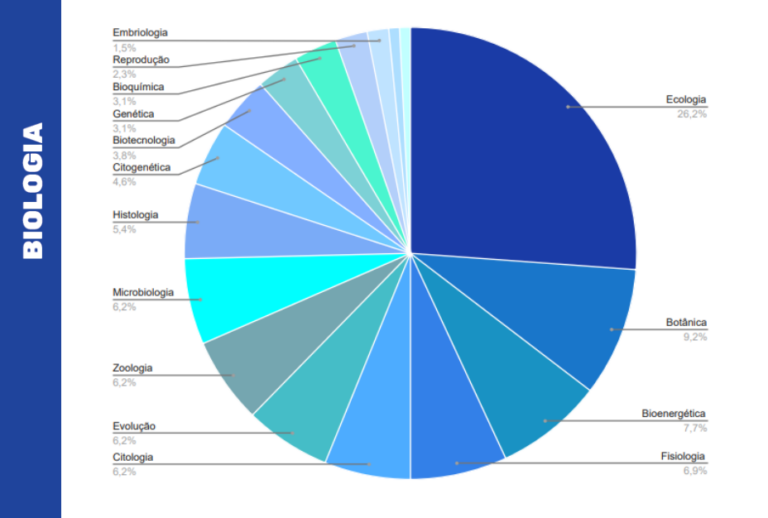

Biologia no Enem 2024: os assuntos que mais caem na prova
Temas de Biologia que mais caem no Enem
A prova de Biologia no Enem costuma trazer temas de forma contextualizada e, muitas vezes, interdisciplinar. Mas os cinco assuntos que você precisa dominar pra valer, conforme mostra o gráfico, são esses:
4.Citologia.

O assunto que nunca falta nessa prova é, de longe, ecologia, que representa 26,2% do exame. É claro que dentro da ecologia você estuda muitas coisas, mas vamos detalhar isso mais à frente.
O segundo tópico mais cobrado é a botânica, formando 9,2% da prova. Entre os temas dessa área estão fisiologia, anatomia e sistemática vegetal.
Já em terceiro lugar, com 7.7% dos exercícios, temos bioenergética. Aqui, o foco está nos processos de respiração celular e fotossíntese.
Por último, mas não menos importantes, estão fisiologia humana, com 6,9%, abrangendo sistemas digestório, endócrino e imunológico; e a citologia, com 6,2% dos exercícios, principalmente sobre membrana celular, parede celular e organelas.
Ecologia
Se você é vestibulando faixa branca, talvez ainda não saiba, mas ecologia é um assunto que cai todo ano no Enem. E não é uma questãozinha só não, tá? A ecologia estuda as relações dos seres vivos entre si e com o meio em que vivem, ou seja, ela está em quase tudo na Biologia.
No Enem, essa é uma temática que cobra bastante contextualização. Então não adianta só decorar os conceitos, você tem que entender como eles funcionam na prática.
Os temas mais abordados são os impactos da ação humana no ambiente - como poluição, extinção de espécies, e aquecimento global - especialmente nas mudanças climáticas que já estão em evidência.
Mas não só dos desastres se faz a ecologia. São cobrados também tópicos como os ciclos biogeoquímicos, as relações ecológicas entre espécies e a dinâmica populacional.
Sobre os ciclos é importante saber como podem ser impactados, positiva e negativamente, e como eles também impactam outros processos. Já sobre as relações ecológicas você deve entender as nuances de cada tipo de interação. Enquanto na dinâmica, é necessário saber quais mudanças resultam no crescimento de uma população.
Além disso, as aplicações práticas propostas nas questões, e até na redação, exigem o conhecimento prévio dos conceitos básicos de ecologia. Portanto, acompanhe de forma crítica as notícias da atualidade relacionadas à temática ambiental e desenvolva sua capacidade de interpretação de texto.
Botânica
Alguém surpreso com este assunto entre os temas de Biologia de maior incidência? Calma, já explicamos do que se trata: a botânica vai abordar sobre os organismos vegetais do planeta Terra.
O que mais caiu nos últimos anos foi a fisiologia vegetal, então é interessante se atentar aos processos de nutrição, principais hormônios vegetais e fotoperiodismos.
É importante também ficar expert nas questões sobre anatomia e histologia das plantas, entendendo como elas funcionam nos diferentes grupos vegetais
Bioenergética
É claro que a bioenergética não poderia ficar de fora do top 5 assuntos que mais caem no Enem em Biologia, já que a respiração celular e a fotossíntese são muito importantes!
Sobre esse tema você tem que conhecer as características das organelas envolvidas, como ter DNA próprio, dupla membrana, etc.
O Enem, dificilmente, pede que os estudantes decorem algum tipo de conteúdo, mas que entendam os processos e interpretem na própria questão a relação entre eles (isso se aplica a todas as questões, não apenas às de bioenergética).
Fisiologia humana
Em todas as edições do Enem esse é um dos tema mais pedidos! Isso porque as questões de fisiologia humana aparecem relacionadas ao cotidiano, o que dá mais espaço para as abordagens multidisciplinares.
Mas você não precisa decorar toda a anatomia, basta entender os processos. Principalmente, como é o funcionamento dos sistemas digestório, circulatório e endócrino. Veja:
- Sistema digestivo: fique ligado nas enzimas digestivas, saiba onde são produzidas e como atuam no organismo. Para saber mais, o professor Jubilut leva você a uma viagem ao intestino!
- Sistema circulatório: entenda o funcionamento da circulação e tenha em mente um panorama básico, será uma ótima estratégia na hora da prova.
- Sistema endócrino: esteja com os principais hormônios do corpo na ponta da língua. Enquanto sobre o imunológico, entenda como ele se relaciona às doenças mais comuns no Brasil.
Citologia
Às vezes, confundimos a citologia com um tema sobre o qual já falamos, a bioenergética. Mas aqui você vai estudar sobre os outros componentes das células: organelas, membrana plasmática e parede celular.
No interior das células, a membrana plasmática é responsável pela permeabilidade e, olhando para ela, conseguimos desvendar vários processos bioquímicos e fisiológicos.
Além da membrana plasmática, as plantas possuem ainda a parede celular como revestimento, lembra disso? A osmose, por exemplo, se comporta de maneira diferente na presença dela.